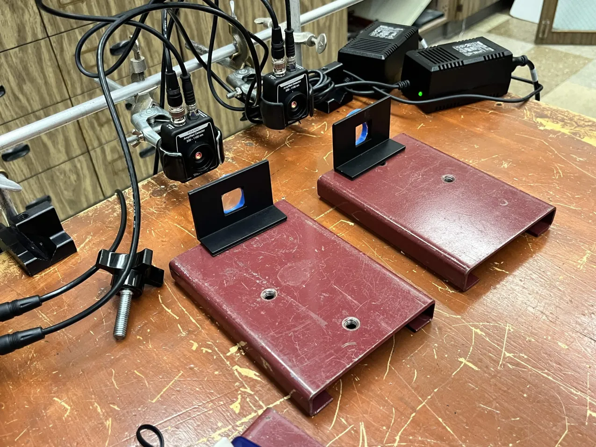

Magnetic Lens Mounts for Speed of Light Lab
Modular, magnetic 3D-printed lens mounts that cut a physics lab's speed-of-light error from ~26% to 1.58%.

Context
The speed of light lab in Pasadena City College's physics sequence had long been one of the labs with the highest measurement error. The semester I took the course was one of the worst for accuracy, which led the physics department to investigate the equipment. After checking with our optics program, we found that the old sensors had deteriorated.
Problem
The replacement sensors are very small, the laser beam is very small, and the two are very difficult to align.
Approach
- Build a modular, highly adjustable system.
- Magnify the laser with a lens so it projects onto a larger surface area.

To achieve both, I designed and 3D printed these lens mounts, which are essentially rings. The wall thickness gives enough margin for the different lens diameters in our inventory and also holds magnetized washers, which attach the mount to a separate stand.
Result
